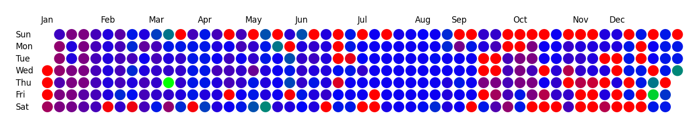

Oatmeal era begins
Oatmeal with blueberries becomes a regular thing.
EXHIBIT 01 · BLUEBERRIES
The first of my MMMMM projects: blueberries. This year I decided to count every blueberry I ate for the whole year, then do a presentation on the statistics. I originally made a Prezi, but all of the statistics will be viewable on this page.
01 · THE BACKSTORY
In late 2024, I started regularly eating oatmeal with blueberries in it.
In 2025, I decided to track every blueberry I ate that year..
Oatmeal with blueberries becomes a regular thing.
Every blueberry eaten that year gets tracked.
02 · THE FINE PRINT
Not every blueberry made the official tally. Only fresh blueberries that were easy to count were included.
Fresh blueberries that were easy to count.
Yes I regret not counting frozen blueberries. Just sometimes they get really stuck together so they're hard to count.
03 · THE BIG PICTURE
The annual totals and headline numbers will live here.
04 · A MONTH-BY-MONTH BERRY ROLL CALL
See how the blueberry count changed over the year.
05 · EVERY LITTLE BERRY
The daily view plots dates across the year against the number of blueberries eaten.
06 · THE BERRY WEATHER MAP
A heatmap view of the year's blueberry counts.

07 · QUESTIONS FROM THE BERRY PUBLIC
Thank you berry much for reading!